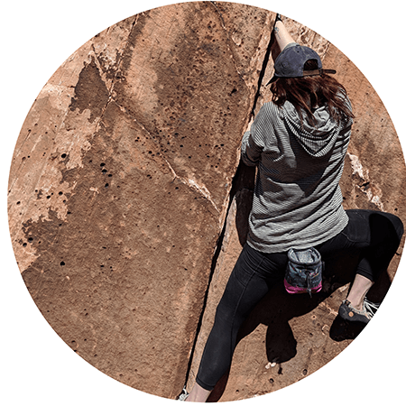
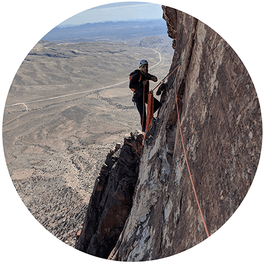
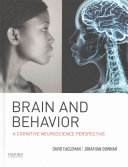

Summer 2019
Meets: Mon/Wed 10:30a-12:20p; Climbing Tues 11:30a-12:20p
Location: School of Education 210, and AOERC climbing gym
Course description: Explores the brain mechanisms of physical action, including how the brain learns to create complex movements, the neural circuitry of the motor system, and how pain, fear, and adrenaline are closely tied to these systems. An emphasis is placed on real-life examples through (optional) weekly rock climbing courses that tie closely into the course.
Prerequisites: We expect, but do not require, students to have a basic knowledge of neuroscience and biology at the level of a college introductory neuroscience, neurobiology, or cognitive neuroscience course. We can provide suggestions for material to catch-up for anybody who needs it.
| Instructors |
|
 Corey Fernandez (coreyf@stanford.edu) Jordan Hall room 409 |
 Daniel Birman (dbirman@stanford.edu) Jordan Hall room 326 |
Office hours are by appointment, just send us an email!
| Learning goals |
The overall goal of this course is to take a deep dive into one specific area of neuroscience, the motor system, to understand how our bodies move and learn to move.
After taking this course you should be able to...
...demonstrate a deeper understanding of how the brain interfaces with the skeletal/motor system to enable complex movements. As part of the course you will learn about many different brain regions and how they work together to create a pattern of muscle contractions (a movement), refine these patterns during learning, and correct for errors in real-time. Some of this will require memorizing factual knowledge from course lectures and readings (e.g. what is the neuromuscular junction, what is the role of acetylcholine), but much of this will also be learned through discussions (e.g. how do we think the cerebellum uses Purkinje cells to perform error correction).
...describe how perceptions of fear and pain, which act as feedback from peripheral and internal systems about the body’s state, can modulate and influence motor function. The motor system is influenced by your cognitive state in many interesting ways. In rock climbing fear and pain are two signals the brain has evolved to signal that the body is in danger and at risk of injury, we will explore how these feedback signals are sent to the brain and how they change the dynamics of motor production and learning.
...understand the techniques, physical movement, and technical skills necessary for safe indoor and outdoor rock climbing. We will use rock climbing to tie together the neuroscience ideas in the class and to provide many interesting demonstrations of the topics we are learning about in an experiential manner.
| Textbook and readings |
The majority of readings in the class are primary literature and we will upload PDFs of these files for easy access.
Early on we will rely on some background reading from two textbooks. You are welcome to get copies of these for your own reference, but this is not required. Two copies will be available on a 2-hour reserve at Green library.
|  | |
Brain and behavior : a cognitive neuroscience perspective |
Neuroscience |
If you do do not have a strong background in biology and/or cognitive neuroscience, or similar, we strongly recommend you look at the other chapters in both textbooks as reference material. We will assume basic knowledge of biology and brain organization throughout the course.
| Weekly Summary |
| Week 1: Motor system (Click for details) | ||
Learning goals:
|
| Monday | Climbing (Tuesday) | Wednesday |
|
Course introduction Review of basic neuroscience (neuron, synapse, neurotransmitters, action potential, plasticity, central vs. peripheral) |
Introduction to climbing and basic movement (holds, boulder problems, barn-door / flagging) | Motor system, systems and circuits: muscles, spinal cord/spinal tract, subcortical areas, cortical areas; motor neurons, neuromuscular junction |
|
Readings: Eagleman Chapter 3 Assignment: Thought questions |
|
Readings: Eagleman Chapter 7 Assignment: Thoughts questions, quiz due Sunday |
| Week 2: Generating a movement (Click for details) | ||
Learning goals:
|
| Monday | Climbing (Tuesday) | Wednesday |
|
Types of movements, movement generation |
Resting How to belay + belay videos |
Volitional motor control, sensorimotor transformations, feedforward and feedback control |
|
Readings: Wagner et al. (2018) Assignment: Thought questions |
|
Readings: Selections from Purves' Neuroscience; Excerpt from Schwarz (2016) Assignment: Thought questions, quiz due Sunday |
| Week 3: Motor learning (Click for details) | ||
Learning goals:
|
| Monday | Climbing (Tuesday) | Wednesday |
|
Plasticity of motor systems, adaptation in novel contexts and conditions |
Routes Continue practicing belaying |
The cerebellum. Organization and function of cerebellar microcircuits, feedforward control, motor learning |
|
Readings: Li et al. (2001) Assignment: Thought questions |
Assignment: Take the belay test |
Readings: Raymond et al. (1996) Assignment: Thought questions, quiz due Sunday |
| Week 4: Motor coordination and skill learning (Click for details) | ||
Learning goals:
|
| Monday | Climbing (Tuesday) | Wednesday |
|
Skill learning, complex motor sequences |
Dynamic movement |
Motor coordination, disorders of the motor system (i.e., ataxias) |
|
Readings: Chapter reading (TBD) Assignment: Thought questions |
|
Readings: Paper reading (TBD) Assignment: Thought questions, quiz due Sunday |
| Week 5: Pain (Click for details) | ||
Learning goals:
|
| Monday | Climbing (Tuesday) | Wednesday |
|
Pain pathways, nociceptive processing |
Climbing injuries + prevention Belaying “after” videos |
Modulation of pain: arousal, stress, pain valence, pain without sensory percept |
|
Readings: Background chapters Assignment: Thought questions |
|
Readings: Schnitzer paper Assignment: Thought questions, quiz due Sunday |
| Week 6: Fear (Click for details) | ||
Learning goals:
|
| Monday | Climbing (Tuesday) | Wednesday |
|
Neural pathways of fear, amygdala, sympathetic/parasympathetic |
Rappeling | Experience of fear, free soloing |
|
Readings: Fear chapters Assignment: Thought questions |
|
Readings: tbd Assignment: Thought questions, quiz due Sunday |
| Week 7: Project presentations (Click for details) | ||
Learning goals:
|
| Monday | Climbing (Tuesday) | Wednesday |
|
Group presentations |
Create a boulder problem | Group presentations |
|
Assignment: Feedback on peer presentations |
Assignment: Complete boulder problem for week 8 |
Assignment: Feedback on peer presentations |
| Week 8: Experiment design (Click for details) | ||
Learning goals:
|
| Monday | Climbing (Tuesday) | Wednesday |
|
Experiment design (belay skill learning), data analysis |
Climb and evaluate each others’ problems | Discussion of results from skill learning data |
|
Readings: Variability decreasing during skill learning (Olveczky paper) Assignment: Work on final paper |
|
Assignment: Final paper due Friday |
| Assignments |
Thought questions: To help guide you through the readings (either from the textbook or papers) we will ask you to answer some basic questions as well as to produce your own questions. Thought questions will be due Sunday by midnight (for Monday) and Tuesday by midnight (for Wednesday). They do not have a right or wrong answer but are an opportunity to engage deeply with the course content and to prepare for an effective in-class discussion.
Quizzes: A short weekly quiz due Sunday night will help ensure you are staying on track in the class. You can complete the quiz twice, once closed-book without notes and then once you have identified what you need to look up, a second time open-book.
Final project: In week 4 of the class you will pick a partner and start researching a topic related to the course which you find particularly interesting. You and your partner will be responsible for (1) learning about the background of this topic, (2) deeply engaging with a recent research paper about it, (3) presenting and discussing your topic with your peers during week seven, and (4) incorporating peer comments into a final write-up. There is an optional extra credit part of the project, in which you design and plan an experiment which could further our knowledge about your topic -- this is the only extra credit offered in the course.
Rock climbing: In the rock climbing portion of the class we will meet for an hour at the climbing gym each week. We will organize a number of fun demonstrations of motor skill learning, fear (but not too much, we promise!), and other interesting demos to help make the course content real. We will have a few assignments for you as part of this, which will include showing up to the climbing gym on your own a few times during the course.
| Grading |
Discussion questions (20%) & quizzes (10%)
Final project: 50% (Proposal: 5%, Presentation: 20%, Write-up: 25%)
Attendance & participation: 20% (class)
| Policies |
Missed classes & work: Attendance at every class meeting is expected. If you are sick, or have an outside commitment, we will allow you to drop two participations, two discussion questions, and one quiz during the quarter. No further accommodations for missed assignments will be permitted without an OAE letter (see below). As a courtesy please inform the instructors when you have to miss a meeting.
Use of laptops & phones: We ask that you refrain from using laptops, tablets and phones in class as their use can be very disruptive to others. While note taking on a computer is permitted, we recommend taking notes with pen and paper (you can take pictures of them and digitize later if you wish). Research has shown that the act of writing helps us retain concepts.
Expectations: As your instructors we will do our best to give you the tools, feedback, and support you need to succeed in this class! We want to get to know you and have a fun and interesting summer quarter. As a student in this class we expect you to be an active participant in your own learning. To get the most out of the class you need to come prepared to share your ideas, ask questions, listen actively, and be respectful of each others' opinions. This class will challenge you, but being challenged is a choice: you should never hesitate to get in touch if you feel that you are overwhelmed by the course, or anything else, while you are at Stanford.
Inclusive environment: The diverse backgrounds and perspectives that you bring to this course are a resource and a strength which we hope will enrich the learning environment for everyone. It is our intent to present materials and activities that are respectful of diversity across gender, sexuality, disability, age, socioeconomic status, ethnicity, race, and culture. Your suggestions for this are encouraged and appreciated. On the first day there will be an opportunity for you to choose how you are addressed in the class, according to your identity. We will do our best to address all students accordingly and encourage other students to do so as well.
Documented disabilities: Students who may need an academic accommodation based on the impact of a disability must initiate the request with the Office of Accessible Education (OAE, http://oae.stanford.edu) at the start of the quarter. Professional staff will evaluate the request with required documentation, recommend reasonable accommodations, and prepare an Accommodation Letter which can be forwarded to the instructors.
Honor code: We will abide by the Stanford University Honor code. Please familiarize yourself with it.